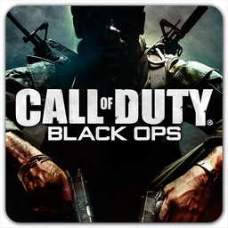
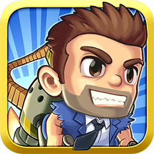
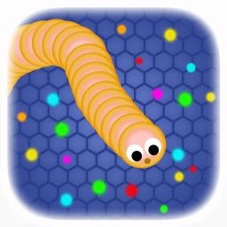

Call Of Duty: Black Ops 2

Wolf Games tuvo el honor de trabajar en el desarrollo de este excelente juego bélico que ha roto todos los esquemas en cuanto a ventas se refiere. Después de haber pasado por PS4 el mes pasado, llega el próximo 6 de octubre a PC y Xbox One, según informa Charlie Intel. Recordad que en esta entrega, Sony ha tenido la exclusividad temporal de todos los contenidos adicionales. Ahora, los usuarios del resto de plataformas podemos disfrutar de esta expansión, que incluye los mismos elementos adicionales.
Jetpack Joyride

El juego llegó el pasado mes de Noviembre para descarga digital a un precio de unos 3,99 dólares pasando unos meses después a hacerse gratuito. En febrero de este año sus descargas se multiplicaron ya que por aquel entonces el juego superaba ya el millón de copias digitales distribuidas.
Slither.io

Aunque sus orígenes se remontan varias décadas atrás, la llegada del Nokia 3210 a finales del siglo pasado logró encumbrar al rol de un clásico de masas el videojuego Snake gracias a venir preinstalado en el dispositivo. Ahora, en 2016, el "juego de la serpiente" regresa con fuerza y se convierte en un éxito viral en la red con una apuesta multijugador para navegadores y aparatos iOS y Android: Slither.io. En Wolf Games hemos podido poner un pedacito de nosotros para que este juego salga a la luz.